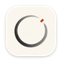
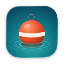
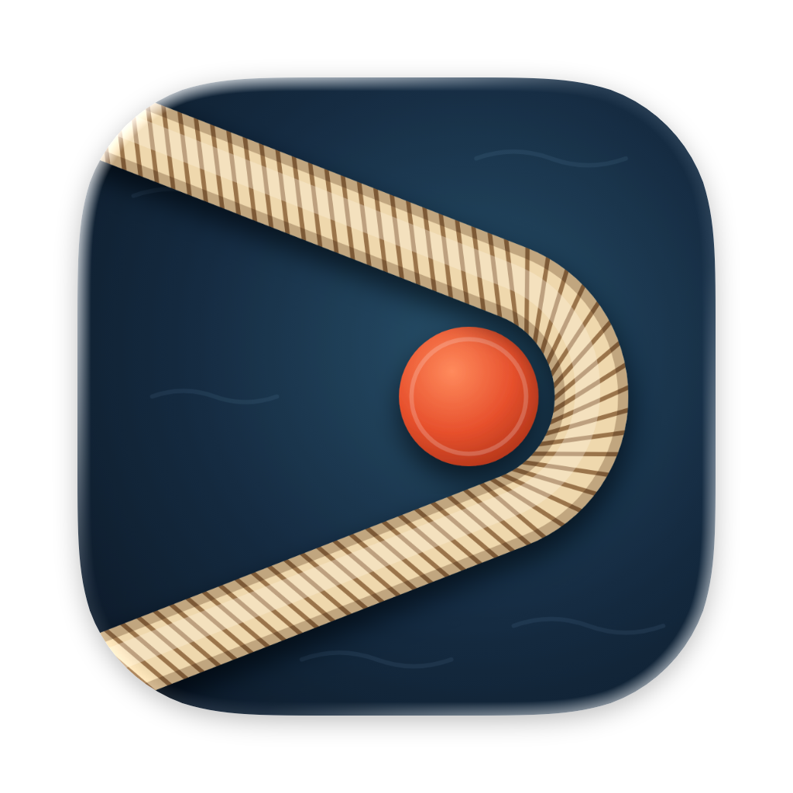
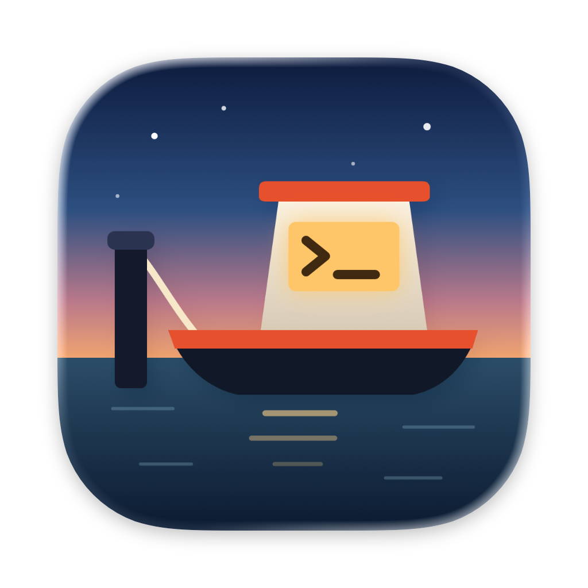
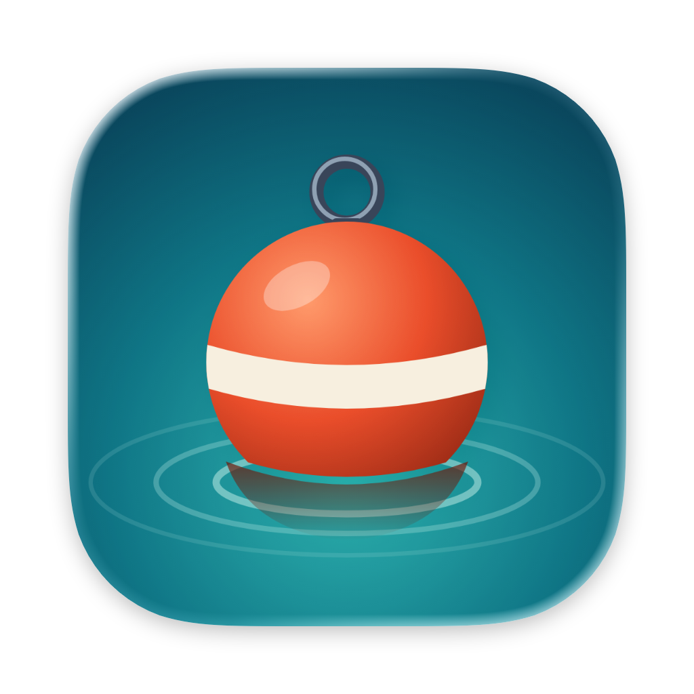

Mooring 图标重做
从头重画的三个方向，全部是 macOS 自己渲染出来的样子。这是给你看的稿子，应用里什么都没换。喜欢哪个、哪里不对，直接说就行。


甲 绳眼
一根真的缆绳套在朱红的桩上，绳子跑出画面，像绷紧着。形状本身还是一个 >，所以同时说了“系泊”和“终端”。托盘：绳眼加方桩，连不上后台时桩消失。
不足：最抽象，要靠名字才知道是“系泊”；绳纹在 32pt 以下会糊成一条米色带；托盘沿用了上一轮 F 的折角形状，只放大了一点，不是全新的。

系统渲染，真实尺寸（pt）
菜单栏：平时 / 3 个要你处理 / 连不上后台
乙 夜泊
傍晚的小船系在桩上，驾驶舱亮着 >_。讲的正是这个产品：你走开了，船还系在那里，灯还亮着，里面还在跑。托盘：一条小船，连不上后台时整体变淡。
不足：最有故事，但最童话，和其他开发工具放一起风格最活泼；托盘小到 18pt 只剩方块加船底，更像印章，这一版还没画好。

系统渲染，真实尺寸（pt）
菜单栏：平时 / 3 个要你处理 / 连不上后台
丙 浮标
水面上一个带系缆环的红色系泊浮标。三个里颜色最跳，在 Dock 里最好找。托盘：环、球和水线，连不上后台时整体变淡。
不足：和“终端”没有关系；大图可能先被看成圣诞球或鱼漂；托盘像叠起来的瓶子，这一版也没画好。

系统渲染，真实尺寸（pt）
菜单栏：平时 / 3 个要你处理 / 连不上后台